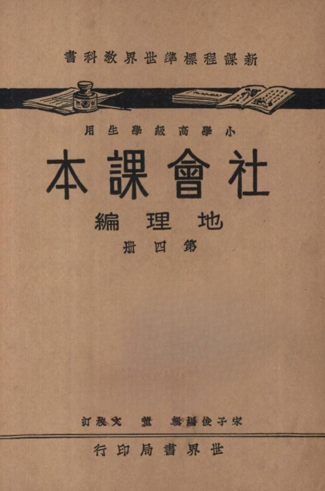

Occurrences
3
Exact minzu hits in this book

Textbook
This view contains all KWIC results for 民族 in this book, followed by the book's individual frequency result.
This table lists every minzu KWIC result found in this textbook.
| No. | Left context | Keyword | Right context |
|---|---|---|---|
| 338 | 美洲南非洲印度東澳洲等地的鐵路網全世界的航空郵電狀况明世界大勢的繼續研究帝國主義的國家社會主義的國家 | 民族 | 自決主義的國家地球形狀兩極赤道五帶經緯地殼地軸南極北極經水半球陸半球三大洋七大陸海港灣海峽潮汐洋流半 |
| 339 | .其政治主張與別的國家截然不同.所以過去受國際間種種的攻擊,最近卻也佔得相當的地位.第三、是要求實現 | 民族 | 自決主義的國家.他們因過去或現在,受列強的侵略和壓迫,致主權喪失,國土減削,經濟破產;有的淪爲殖民地 |
| 340 | 些國家,現在都覺醒了,本 | 民族 | 自決的精神,謀國家的獨立和自主,中|國、土耳|其、印|度、埃|及等,都可爲代表.(問題】山全世界的人 |
Occurrences
3
Exact minzu hits in this book
Analysis chars
12,541
Cleaned characters used as denominator
Per 10k chars
2.39
Normalized frequency
| Subject | Geography |
|---|---|
| Textbook | 社会课本（地理编 第四册） |
| Keyword | minzu (民族) |
| Raw occurrences | 3 |
| Occurrences per 10,000 analysis characters | 2.39 |